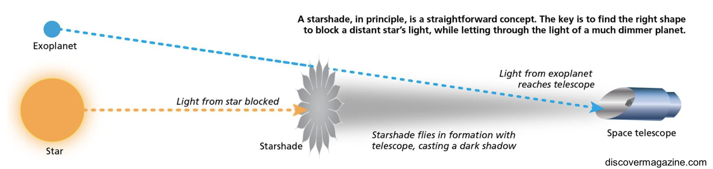

Spacecraft formation flying
Future space missions like HabEx and LUVOIR may fly with large starshades, petal-shaped spacecraft designed to block out stars so that faint planets may be seen around them. For the starlight to be properly blocked, the starshade must be positioned tens of thousands of kilometers in front of the telescope and maintain its lateral position to one meter. At JPL, we solved this problem by optical sensing of the starlight that bent around the starshade. This method delivered positional sensing accuracy of ~1 cm, even at these very long distances.
|  |
A related question we are investigating is how well this technique would work with different kinds of non-starshade missions. In principle, this would allow for intermediate-range (100s to 1000s of km) formation flying at ~cm accuracy for small spacecraft in gentle differential gravity gradients.